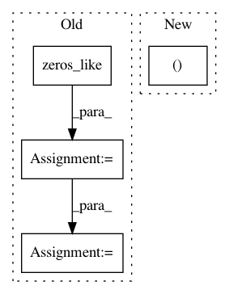

c8b28432a637a780eed96547260722ff3dede57e,niftynet/engine/sampler_selective.py,,create_label_size_map,#Any#Any#,140
Before Change
labels = np.unique(data)
print("Labels are ", labels)
binary_seg = np.copy(data)
binary_seg = np.where(binary_seg == value, np.ones_like(data),
np.zeros_like(data))
labelled_data, num_features = ndimage.label(binary_seg)
print("Labelling features done")
unique, count = np.unique(labelled_data, return_counts=True)
count_data = np.copy(labelled_data)
for u, c in zip(unique, count):
After Change
:param value: value of the label to consider
:return: count_data
"""
labelled_data, _ = ndimage.label(np.round(data) == int(value))
unique, count = np.unique(labelled_data, return_counts=True)
count_data = np.copy(labelled_data)
for label, size in zip(unique, count):
In pattern: SUPERPATTERN
Frequency: 3
Non-data size: 4
Instances
Project Name: NifTK/NiftyNet
Commit Name: c8b28432a637a780eed96547260722ff3dede57e
Time: 2017-10-04
Author: wenqi.li@ucl.ac.uk
File Name: niftynet/engine/sampler_selective.py
Class Name:
Method Name: create_label_size_map
Project Name: keras-team/keras
Commit Name: 73e563ecaf915d073d8b8fabc4a568ecddb0ea11
Time: 2016-02-25
Author: farizrahman4u@gmail.com
File Name: keras/layers/recurrent.py
Class Name: Recurrent
Method Name: get_initial_states
Project Name: chainer/chainercv
Commit Name: 4f9cfd059cdd34df5de57d34e931165e3a8d2f0f
Time: 2017-05-28
Author: yuyuniitani@gmail.com
File Name: chainercv/links/model/faster_rcnn/faster_rcnn_train_chain.py
Class Name: FasterRCNNTrainChain
Method Name: __call__